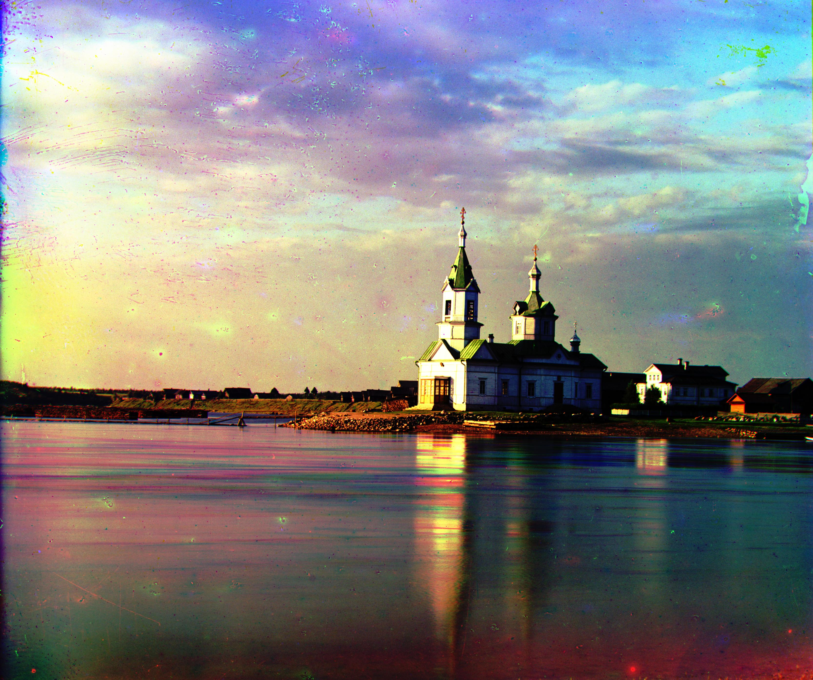
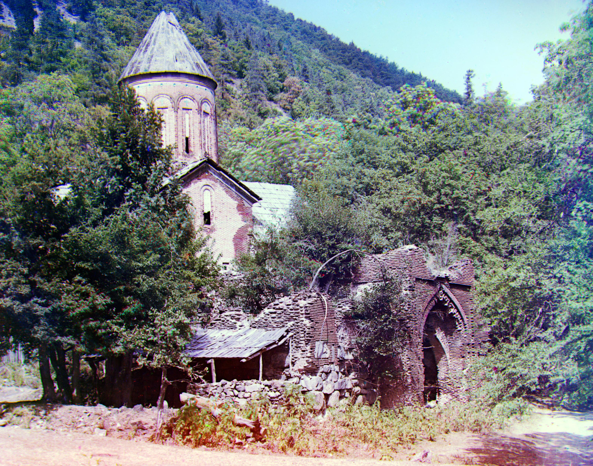
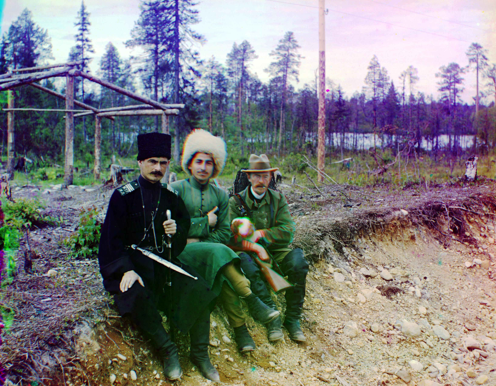
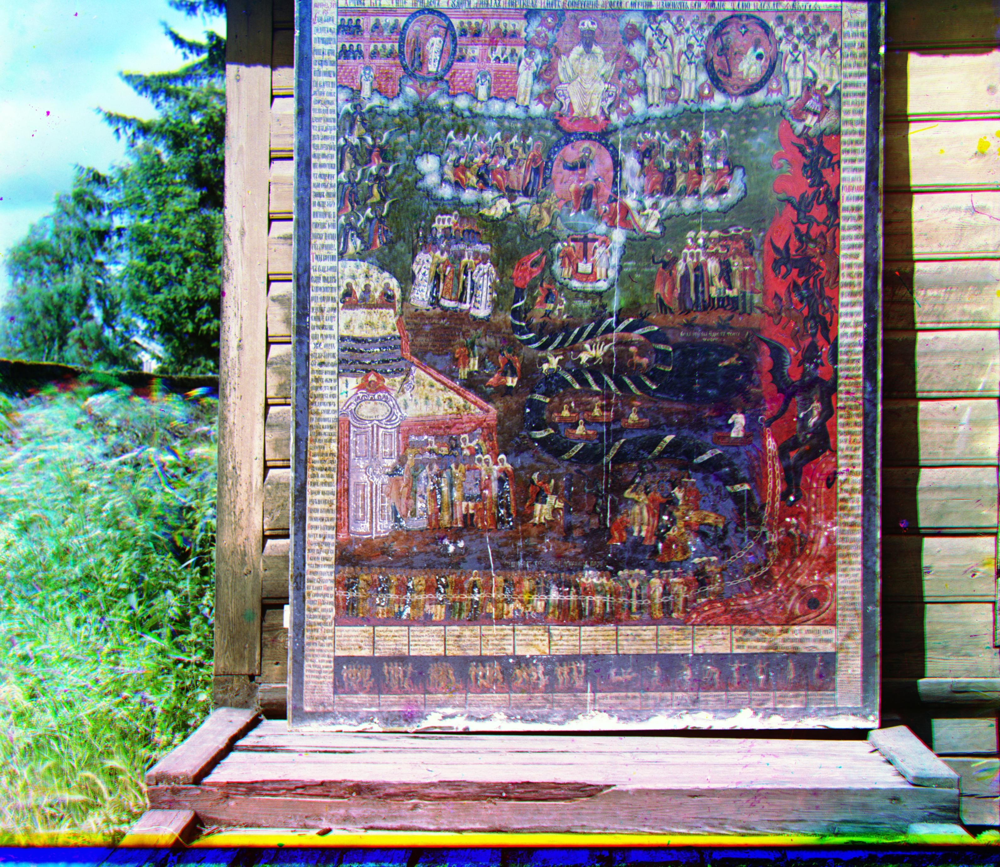
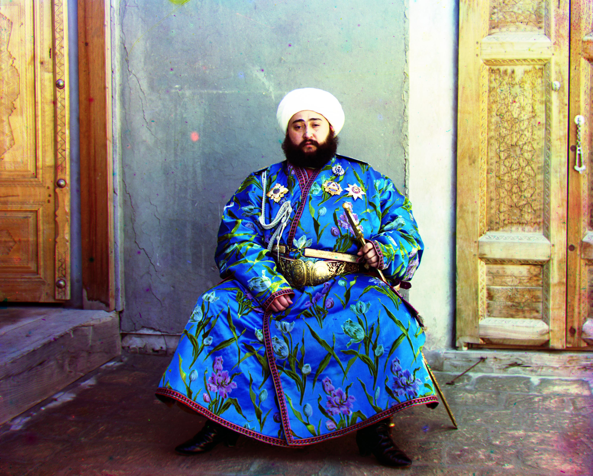
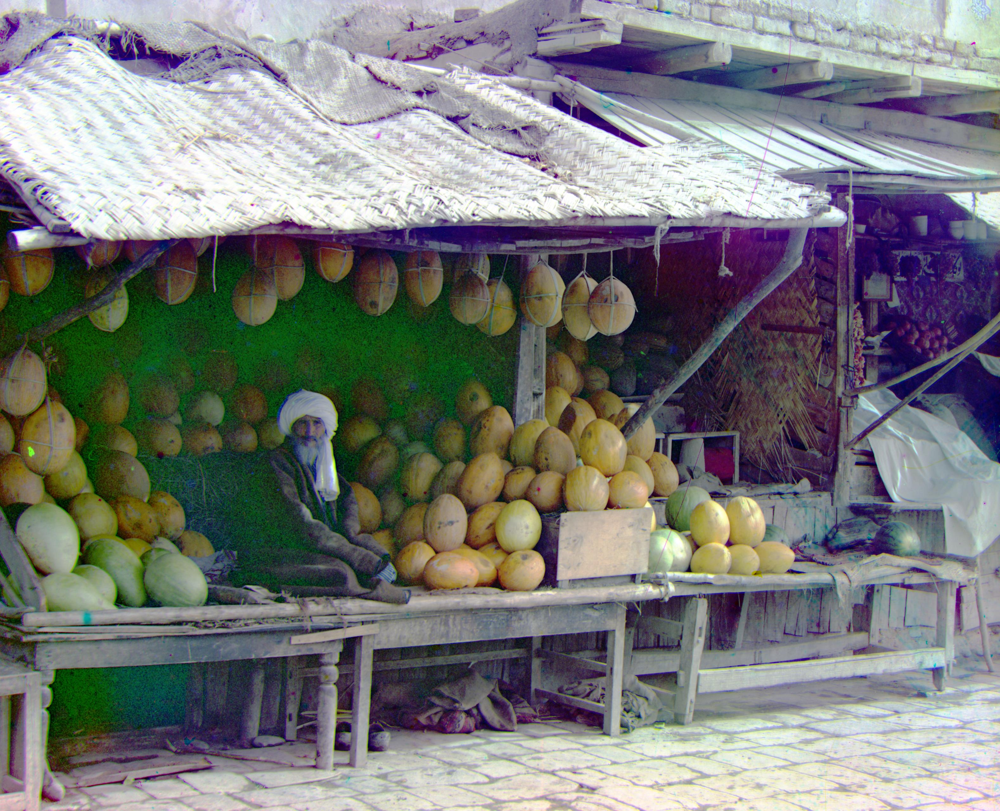
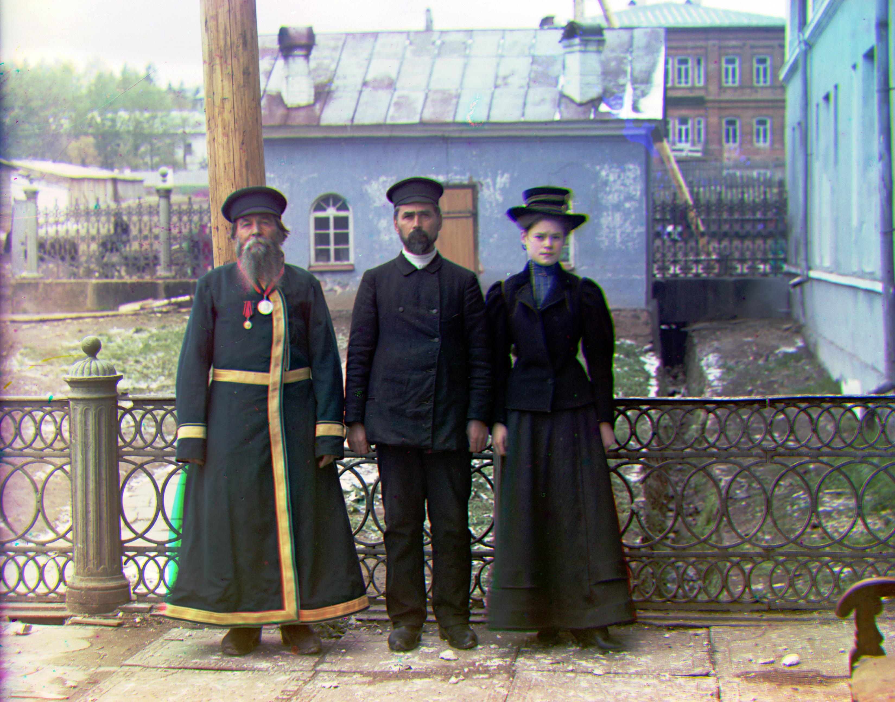
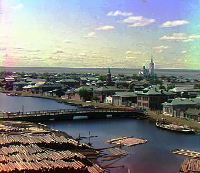

Cathedral: Reference: Green, $\vec v_\text{blue} = [-5, -2],\ \vec v_\text{red} = [7, 1]$
Church: Reference: Green, $\vec v_\text{blue} = [-25, -4],\ \vec v_\text{red} = [33, -8]$ 
Custom1: Reference: Green, $\vec v_\text{blue} = [-64, 6],\ \vec v_\text{red} = [76, -12]$ 
Custom2: Reference: Green, $\vec v_\text{blue} = [-15, -27],\ \vec v_\text{red} = [71, 25]$
Custom3: Reference: Green, $\vec v_\text{blue} = [-14, 1],\ \vec v_\text{red} = [69, -1]$
Custom4: Reference: Green, $\vec v_\text{blue} = [-33, -7],\ \vec v_\text{red} = [81, 6]$ 
Custom5: Reference: Green, $\vec v_\text{blue} = [-51, -13],\ \vec v_\text{red} = [64, 7]$ 
Emir: Reference: Green, $\vec v_\text{blue} = [-49, -24],\ \vec v_\text{red} = [58, 17]$ 
Harvesters: Reference: Green, $\vec v_\text{blue} = [-59, -17],\ \vec v_\text{red} = [64, -3]$
Icon: Reference: Green, $\vec v_\text{blue} = [-39, -17],\ \vec v_\text{red} = [48, 5]$
Lady: Reference: Green, $\vec v_\text{blue} = [-55, -9],\ \vec v_\text{red} = [63, 4]$
Melons: Reference: Green, $\vec v_\text{blue} = [-83, -11],\ \vec v_\text{red} = [96, 3]$ 
Monastery: Reference: Green, $\vec v_\text{blue} = [3, -2],\ \vec v_\text{red} = [6, 1]$
Onion Church: Reference: Green, $\vec v_\text{blue} = [-52, -26],\ \vec v_\text{red} = [58, 10]$
Sculpture: Reference: Blue, $\vec v_\text{red} = [140, -27],\ \vec v_\text{green} = [33, -11]$
Self Portrait: Reference: Green, $\vec v_\text{blue} = [-79, -30],\ \vec v_\text{red} = [98, 8]$
Three Generations: Reference: Green, $\vec v_\text{blue} = [-51, -13],\ \vec v_\text{red} = [58, -1]$ 
Tobolsk: Reference: Green, $\vec v_\text{blue} = [-3, -3],\ \vec v_\text{red} = [4, 1]$ 
Train: Reference: Green, $\vec v_\text{blue} = [-42, -7],\ \vec v_\text{red} = [43, 26]$